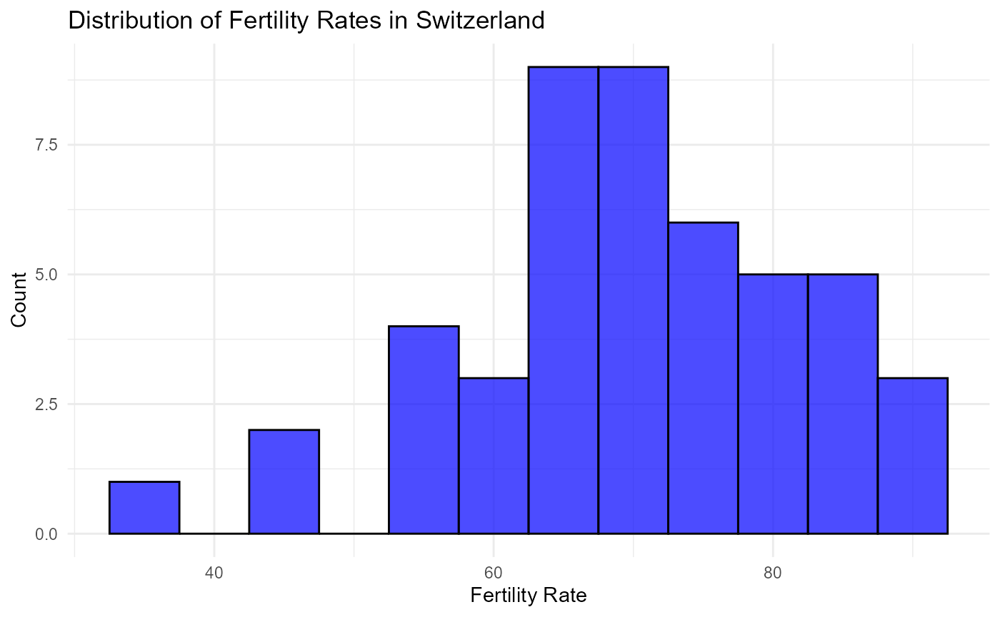

sampledatasets: A collection of Sample DataSets
Source:vignettes/intro_sampledatasets.Rmd
intro_sampledatasets.Rmd
library(sampledatasets)
library(ggplot2)
library(dplyr)
#>
#> Attaching package: 'dplyr'
#> The following objects are masked from 'package:stats':
#>
#> filter, lag
#> The following objects are masked from 'package:base':
#>
#> intersect, setdiff, setequal, unionIntroduction
The sampledatasets package provides a diverse collection
of sample datasets, covering various fields such as automotive
performance and safety, historical demographics, socioeconomic
indicators, and recreational data. This package serves as a
valuable resource for researchers and analysts seeking to perform
analyses and derive insights from classic datasets in R.
Dataset Suffixes
Each dataset includes a suffix indicating its format to help users identify the data type easily. The suffixes include:
df: A standard data frame. tbl: A tibble
data frame.
Example Datasets
The sampledatasets package includes the following
datasets:
mtcars_df: A data frame containing motor trend car data, including miles per gallon, horsepower, and weight.
swiss_df: A data frame of Swiss socioeconomic data, including fertility rates and education levels.
cars_df: A data frame of car speed and stopping distances. arbuthnot_tbl: A tibble of historical birth records by year, including counts of boys and girls.
cards_tbl: A tibble representing a standard 52-card deck, including values, suits, and colors.
All datasets in sampledatasets retain their original structure and content, ensuring integrity and reliability for analyses.
Visualizing Data with ggplot2
To demonstrate the datasets, here are a few visualization examples using the ggplot2 package.
- Visualization of Miles Per Gallon in Cars
# Example: Scatter plot of miles per gallon vs weight
mtcars_df %>%
ggplot(aes(x = wt, y = mpg, color = cyl)) +
geom_point(alpha = 0.7) +
labs(
title = "Miles Per Gallon vs Weight",
x = "Weight (1000 lbs)",
y = "Miles per Gallon",
color = "Cylinders"
) +
theme_minimal()
- Distribution of Fertility Rates in Swiss Data
# Example: Histogram of fertility rates
swiss_df %>%
ggplot(aes(x = Fertility)) +
geom_histogram(binwidth = 5, fill = "blue", color = "black", alpha = 0.7) +
labs(
title = "Distribution of Fertility Rates in Switzerland",
x = "Fertility Rate",
y = "Count"
) +
theme_minimal()